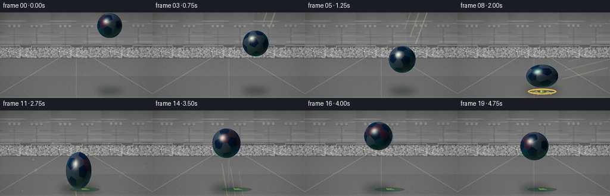
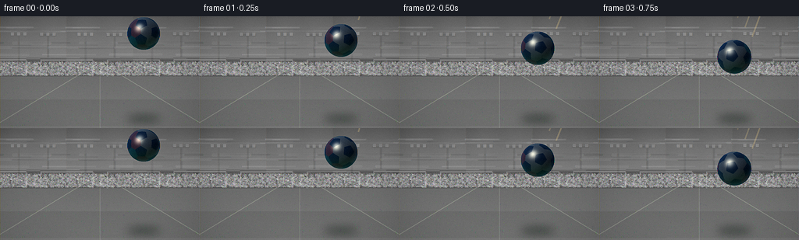

CODING AGENTS AS PIXEL WORLD MODELS
traex/DeepSeek-V4.1-Flash · phygen_029
点击播放 · 原生 RGB 像素
逐轮保存的候选
回放视频、检查图与代码变化。
每份候选均可单独播放。实际图片检查记录在下方工具轨迹中。
候选 01播放与检查图
点击播放 · 原生 RGB 像素


展开代码变化
--- 上一保存版本
+++ 本次保存版本
@@ -0,0 +1,495 @@
+from pathlib import Path
+import math
+
+import numpy as np
+from PIL import Image, ImageDraw, ImageFilter
+
+import artifact_io
+
+
+ROOT = Path(__file__).resolve().parent
+W, H = 256, 144
+N = 20
+FPS = 4
+SS = 4
+CW, CH = W * SS, H * SS
+
+
+def unit(v):
+ v = np.asarray(v, dtype=np.float32)
+ return v / np.linalg.norm(v)
+
+
+def color_lerp(a, b, t):
+ a = np.asarray(a, dtype=np.float32)
+ b = np.asarray(b, dtype=np.float32)
+ return a + (b - a) * t[..., None]
+
+
+def make_panel_centers():
+ phi = (1.0 + math.sqrt(5.0)) / 2.0
+ verts = []
+ for a in (-1.0, 1.0):
+ for b in (-phi, phi):
+ verts.extend([(0.0, a, b), (a, b, 0.0), (b, 0.0, a)])
+ verts = np.asarray(verts, dtype=np.float32)
+ verts = verts[np.lexsort((verts[:, 2], verts[:, 1], verts[:, 0]))]
+ verts = np.unique(np.round(verts, 6), axis=0).astype(np.float32)
+ verts /= np.linalg.norm(verts, axis=1, keepdims=True)
+
+ distances = np.linalg.norm(verts[:, None, :] - verts[None, :, :], axis=2)
+ edge = distances[np.triu_indices(len(verts), 1)].min()
+ faces = []
+ for i in range(len(verts)):
+ for j in range(i + 1, len(verts)):
+ for k in range(j + 1, len(verts)):
+ if (
+ distances[i, j] <= edge + 1e-5
+ and distances[i, k] <= edge + 1e-5
+ and distances[j, k] <= edge + 1e-5
+ ):
+ face = verts[i] + verts[j] + verts[k]
+ face /= np.linalg.norm(face)
+ faces.append(face)
+ faces = np.unique(np.round(np.asarray(faces), 6), axis=0).astype(np.float32)
+ assert len(verts) == 12 and len(faces) == 20, (len(verts), len(faces))
+ return verts, faces
+
+
+PENT_CENTERS, HEX_CENTERS = make_panel_centers()
+PANEL_CENTERS = np.concatenate([PENT_CENTERS, HEX_CENTERS], axis=0)
+
+
+def panel_palette():
+ colors = np.zeros((32, 3), dtype=np.float32)
+ colors[:12] = (18, 37, 64)
+ colors[12:] = (244, 233, 202)
+ for index in (0, 3, 7, 11, 16):
+ colors[12 + index] = (236, 82, 65)
+ for index in (5, 14):
+ colors[12 + index] = (35, 170, 165)
+ return colors
+
+
+PANEL_COLORS = panel_palette()
+
+
+def add_glow(base, center, radius, color, strength):
+ overlay = Image.new("RGBA", (CW, CH), (0, 0, 0, 0))
+ draw = ImageDraw.Draw(overlay)
+ x, y = center
+ draw.ellipse(
+ (x - radius, y - radius, x + radius, y + radius),
+ fill=(*color, int(255 * strength)),
+ )
+ overlay = overlay.filter(ImageFilter.GaussianBlur(radius * 0.52))
+ return Image.alpha_composite(base.convert("RGBA"), overlay)
+
+
+def make_background():
+ yy = np.arange(CH, dtype=np.float32)[:, None]
+ xx = np.arange(CW, dtype=np.float32)[None, :]
+ horizon = 58.0 * SS
+
+ sky_t = np.clip(yy / horizon, 0.0, 1.0)
+ top = np.array((7, 15, 36), dtype=np.float32)
+ middle = np.array((25, 75, 99), dtype=np.float32)
+ low = np.array((225, 128, 82), dtype=np.float32)
+ first = np.clip(sky_t / 0.68, 0.0, 1.0)
+ second = np.clip((sky_t - 0.68) / 0.32, 0.0, 1.0)
+ sky = color_lerp(top, middle, first)
+ sky = sky * (1.0 - second[..., None]) + low * second[..., None]
+ sky = np.broadcast_to(sky, (CH, CW, 3)).copy()
+
+ sun_x, sun_y = CW * 0.76, horizon - 2.0 * SS
+ radial = np.sqrt(((xx - sun_x) / (CW * 0.38)) ** 2 + ((yy - sun_y) / (H * 0.72 * SS)) ** 2)
+ glow = np.clip(1.0 - radial, 0.0, 1.0) ** 2.1
+ sky += glow[..., None] * np.array((74, 42, 12), dtype=np.float32)
+ sky = np.where((yy < horizon)[..., None], sky, 0.0)
+
+ image = Image.fromarray(np.clip(sky, 0, 255).astype(np.uint8), "RGB")
+ image = add_glow(image, (int(sun_x), int(sun_y)), int(78 * SS), (255, 170, 88), 0.38)
+
+ draw = ImageDraw.Draw(image, "RGBA")
+
+ # Thin cloud bands keep the sky from reading as a flat gradient.
+ cloud_rng = np.random.default_rng(19)
+ for _ in range(12):
+ cy = cloud_rng.uniform(9, 38) * SS
+ cx = cloud_rng.uniform(-20, W + 10) * SS
+ length = cloud_rng.uniform(28, 86) * SS
+ height = cloud_rng.uniform(1.0, 2.4) * SS
+ tint = cloud_rng.choice(np.array([(235, 164, 135), (94, 132, 143), (249, 190, 142)]))
+ draw.rounded_rectangle(
+ (cx, cy, cx + length, cy + height),
+ radius=height * 0.5,
+ fill=(*[int(v) for v in tint], cloud_rng.integers(24, 58)),
+ )
+
+ # Stadium bowl, crowd, and a low dark foreground silhouette.
+ draw.polygon(
+ [(0, 44 * SS), (CW, 39 * SS), (CW, horizon + 3 * SS), (0, horizon + 3 * SS)],
+ fill=(8, 26, 34, 245),
+ )
+ draw.polygon(
+ [(0, 49 * SS), (CW, 46 * SS), (CW, horizon + 4 * SS), (0, horizon + 4 * SS)],
+ fill=(13, 41, 46, 255),
+ )
+ crowd_rng = np.random.default_rng(7)
+ crowd_colors = [(255, 189, 87), (239, 91, 80), (96, 213, 200), (237, 230, 196), (119, 152, 218)]
+ for _ in range(1750):
+ px = crowd_rng.uniform(0, CW)
+ py = crowd_rng.uniform(44 * SS, 56.8 * SS)
+ radius = crowd_rng.uniform(0.42, 1.05) * SS
+ tint = crowd_colors[int(crowd_rng.integers(0, len(crowd_colors)))]
+ draw.ellipse((px - radius, py - radius, px + radius, py + radius), fill=(*tint, 130))
+
+ # Floodlight masts and bulbs.
+ for pole_x in (18 * SS, 238 * SS):
+ draw.line((pole_x, 18 * SS, pole_x, 48 * SS), fill=(5, 15, 22, 255), width=2 * SS)
+ draw.line((pole_x - 8 * SS, 18 * SS, pole_x + 8 * SS, 18 * SS), fill=(5, 15, 22, 255), width=2 * SS)
+ for bx in (-6, 0, 6):
+ draw.rectangle(
+ (pole_x + bx * SS - 1.4 * SS, 15.7 * SS, pole_x + bx * SS + 1.4 * SS, 18.3 * SS),
+ fill=(255, 242, 190, 245),
+ )
+ image = add_glow(image, (18 * SS, 17 * SS), int(19 * SS), (255, 225, 150), 0.34)
+ image = add_glow(image, (238 * SS, 17 * SS), int(19 * SS), (255, 225, 150), 0.34)
+
+ # Distant goal gives the ball a clear football context.
+ gx0, gx1 = 103 * SS, 153 * SS
+ gy0, gy1 = 42 * SS, 58.5 * SS
+ net = Image.new("RGBA", (CW, CH), (0, 0, 0, 0))
+ nd = ImageDraw.Draw(net)
+ for gx in np.linspace(gx0, gx1, 13):
+ nd.line((gx, gy0, gx, gy1), fill=(211, 234, 218, 34), width=1)
+ for gy in np.linspace(gy0, gy1, 9):
+ nd.line((gx0, gy, gx1, gy), fill=(211, 234, 218, 34), width=1)
+ image = Image.alpha_composite(image.convert("RGBA"), net)
+ draw = ImageDraw.Draw(image, "RGBA")
+ draw.line((gx0, gy0, gx0, gy1), fill=(238, 244, 225, 180), width=int(1.2 * SS))
+ draw.line((gx1, gy0, gx1, gy1), fill=(238, 244, 225, 180), width=int(1.2 * SS))
+ draw.line((gx0, gy0, gx1, gy0), fill=(238, 244, 225, 195), width=int(1.3 * SS))
+
+ # Pitch: perspective stripes, depth haze, and converging touchlines.
+ field = np.zeros((CH, CW, 3), dtype=np.float32)
+ d = np.clip((yy - horizon) / (CH - horizon), 0.0, 1.0)
+ depth = 1.0 / np.maximum(0.15, 1.0 - 0.87 * d)
+ stripe = np.floor(depth * 1.55).astype(np.int32) % 2
+ near = color_lerp((18, 89, 57), (44, 147, 60), np.clip(d * 1.12, 0, 1))
+ field[:] = near
+ field += (stripe[..., None] - 0.5) * np.array((10, 15, 7), dtype=np.float32)
+ left_warm = np.clip(1.0 - xx / CW, 0.0, 1.0) * (0.08 + 0.11 * d)
+ field += left_warm[..., None] * np.array((22, 18, 0), dtype=np.float32)
+ field_mask = np.broadcast_to(yy >= horizon, (CH, CW))
+ image_array = np.asarray(image, dtype=np.float32)
+ image_array[field_mask, :3] = field[field_mask]
+ image = Image.fromarray(np.clip(image_array, 0, 255).astype(np.uint8), "RGB")
+ draw = ImageDraw.Draw(image, "RGBA")
+
+ vx, vy = 128 * SS, horizon + 1 * SS
+ draw.line((vx, vy, -12 * SS, CH), fill=(229, 240, 211, 52), width=int(1.1 * SS))
+ draw.line((vx, vy, 268 * SS, CH), fill=(229, 240, 211, 52), width=int(1.1 * SS))
+ draw.line((vx, vy, vx, CH), fill=(231, 241, 217, 35), width=1 * SS)
+
+ # Fine grass flecks, denser in the foreground.
+ grass_rng = np.random.default_rng(31)
+ for _ in range(1350):
+ px = grass_rng.uniform(0, CW)
+ py = grass_rng.uniform(horizon + 1 * SS, CH)
+ fade = (py - horizon) / (CH - horizon)
+ length = grass_rng.uniform(0.4, 1.6) * SS * (0.45 + fade)
+ shade = grass_rng.choice(np.array([(35, 121, 56), (91, 178, 74), (22, 104, 54)]))
+ draw.line((px, py, px + grass_rng.normal(0, 0.4 * SS), py - length), fill=(*shade, 70), width=1)
+
+ # Soft foreground darkening and a restrained vignette.
+ vig = np.sqrt(((xx - CW * 0.5) / (CW * 0.72)) ** 2 + ((yy - CH * 0.5) / (CH * 0.78)) ** 2)
+ vignette = np.clip((vig - 0.42) / 0.82, 0.0, 1.0) ** 1.55
+ image_array = np.asarray(image, dtype=np.float32)
+ image_array *= (1.0 - 0.21 * vignette[..., None])
+ return Image.fromarray(np.clip(image_array, 0, 255).astype(np.uint8), "RGB")
+
+
+def trajectory():
+ # Frame positions are hand-tuned for readable 4 fps motion and a clear bounce.
+ cx = np.array([184, 181, 177, 173, 168, 163, 157, 150, 142, 138, 135, 132, 129, 126, 124, 123, 123, 124, 126, 129], dtype=np.float32)
+ cy = np.array([22, 31, 41, 52, 65, 79, 93, 105, 107, 118, 115, 101, 83, 67, 55, 47, 43, 45, 51, 60], dtype=np.float32)
+ radius = np.array([21, 21.2, 21.5, 21.8, 22.2, 22.6, 23.2, 24.0, 25.0, 25.0, 25.5, 25.2, 24.8, 24.5, 24.2, 24.0, 23.8, 23.8, 23.8, 23.8], dtype=np.float32)
+ rx = radius.copy()
+ ry = radius.copy()
+ ry[8] = 19.5
+ rx[8] = 27.0
+ ry[9] = 15.0
+ rx[9] = 31.0
+ ry[10] = 19.0
+ rx[10] = 28.0
+ ry[11] = 31.0
+ rx[11] = 21.5
+ ry[12] = 29.5
+ rx[12] = 22.3
+ ry[13] = 26.5
+ rx[13] = 23.1
+ ry[14] = 25.0
+ rx[14] = 23.7
+ return cx, cy, rx, ry
+
+
+def draw_shadow(canvas, cx, cy, radius, frame):
+ ground_y = 134 * SS
+ bottom = (cy + radius) * SS
+ height = max(0.0, (134.0 - bottom) / SS)
+ shadow_x = (cx + height * 0.26) * SS
+ shadow_y = ground_y - 2.0 * SS
+ spread = 1.0 + height / 55.0
+ shadow_rx = radius * SS * 1.02 * spread
+ shadow_ry = max(2.2 * SS, radius * SS * 0.20 * spread)
+ alpha = int(np.clip(122 - height * 0.55, 48, 122))
+ overlay = Image.new("RGBA", (CW, CH), (0, 0, 0, 0))
+ draw = ImageDraw.Draw(overlay)
+ draw.ellipse(
+ (shadow_x - shadow_rx, shadow_y - shadow_ry, shadow_x + shadow_rx, shadow_y + shadow_ry),
+ fill=(4, 28, 15, alpha),
+ )
+ overlay = overlay.filter(ImageFilter.GaussianBlur((5.5 + height * 0.10) * SS))
+ return Image.alpha_composite(canvas.convert("RGBA"), overlay)
+
+
+def draw_motion_streaks(canvas, cx, cy, frame):
+ if frame >= 16:
+ return canvas
+ cx_arr, cy_arr, _, _ = trajectory()
+ if frame == 0:
+ dx, dy = cx_arr[1] - cx_arr[0], cy_arr[1] - cy_arr[0]
+ else:
+ dx, dy = cx_arr[frame] - cx_arr[frame - 1], cy_arr[frame] - cy_arr[frame - 1]
+ length = np.hypot(dx, dy)
+ if length < 2:
+ return canvas
+ ux, uy = dx / length, dy / length
+ px, py = -uy, ux
+ overlay = Image.new("RGBA", (CW, CH), (0, 0, 0, 0))
+ draw = ImageDraw.Draw(overlay)
+ fade = 0.70 if frame < 8 else 0.44
+ for i, offset in enumerate((-0.72, 0.0, 0.72)):
+ ox = px * offset * 18 * SS
+ oy = py * offset * 18 * SS
+ trail = (19 + i * 5) * SS
+ start = ((cx - ux * trail * 0.42) * SS + ox, (cy - uy * trail * 0.42) * SS + oy)
+ end = ((cx - ux * trail * 1.45) * SS + ox, (cy - uy * trail * 1.45) * SS + oy)
+ tint = (255, 224, 153, int((84 - i * 15) * fade))
+ draw.line((start, end), fill=tint, width=int((2.2 - i * 0.35) * SS))
+ return Image.alpha_composite(canvas.convert("RGBA"), overlay)
+
+
+def draw_scuff(canvas, frame):
+ if frame < 9:
+ return canvas
+ overlay = Image.new("RGBA", (CW, CH), (0, 0, 0, 0))
+ draw = ImageDraw.Draw(overlay)
+ ix, iy = 142 * SS, 133.2 * SS
+ draw.ellipse((ix - 25 * SS, iy - 3.5 * SS, ix + 25 * SS, iy + 3.5 * SS), fill=(17, 67, 37, 105))
+ for i in range(9):
+ angle = math.pi * (1.03 + i * 0.115)
+ length = (4.5 + (i % 3) * 1.7) * SS
+ ex = ix + math.cos(angle) * length
+ ey = iy + math.sin(angle) * length * 0.35
+ draw.line((ix, iy, ex, ey), fill=(167, 213, 104, 100), width=1 * SS)
+ return Image.alpha_composite(canvas.convert("RGBA"), overlay)
+
+
+def draw_impact_effects(canvas, frame):
+ if frame < 8:
+ return canvas
+ dt = (frame - 8) / FPS
+ ix, iy = 142 * SS, 133.0 * SS
+ overlay = Image.new("RGBA", (CW, CH), (0, 0, 0, 0))
+ draw = ImageDraw.Draw(overlay)
+
+ if dt <= 0.75:
+ ring_t = dt / 0.75
+ ring_rx = (24 + 43 * ring_t) * SS
+ ring_ry = (5.0 + 8.0 * ring_t) * SS
+ alpha = int(185 * (1.0 - ring_t) ** 0.8)
+ draw.ellipse(
+ (ix - ring_rx, iy - ring_ry, ix + ring_rx, iy + ring_ry),
+ outline=(255, 218, 111, alpha),
+ width=max(1, int((3.0 - ring_t * 1.5) * SS)),
+ )
+ if frame <= 9:
+ for i in range(13):
+ angle = math.pi * (0.02 + i / 12.0)
+ length = (16 + (i % 4) * 6) * SS * (0.7 + ring_t)
+ draw.line(
+ (
+ ix + math.cos(angle) * 8 * SS,
+ iy + math.sin(angle) * 2 * SS,
+ ix + math.cos(angle) * length,
+ iy + math.sin(angle) * length * 0.28,
+ ),
+ fill=(255, 231, 146, int(135 * (1 - ring_t))),
+ width=1 * SS,
+ )
+
+ rng = np.random.default_rng(829)
+ count = 92
+ vx = rng.uniform(-155, 155, count)
+ vy = rng.uniform(70, 245, count)
+ life = rng.uniform(0.35, 1.12, count)
+ size = rng.uniform(0.8, 2.4, count)
+ phase = rng.uniform(0, math.tau, count)
+ for i in range(count):
+ if dt > life[i]:
+ continue
+ life_t = dt / life[i]
+ x = ix + vx[i] * SS * dt
+ y = iy - (vy[i] * SS * dt - 0.5 * 360.0 * SS * dt * dt)
+ if y > iy + 2 * SS:
+ continue
+ x += math.sin(phase[i] + dt * 8.0) * 1.2 * SS
+ alpha = int(210 * (1.0 - life_t) ** 1.25)
+ palette_index = i % 5
+ colors = [
+ (255, 204, 91),
+ (165, 228, 94),
+ (90, 176, 66),
+ (222, 235, 169),
+ (83, 118, 53),
+ ]
+ color = colors[palette_index]
+ rr = size[i] * SS
+ draw.ellipse((x - rr, y - rr, x + rr, y + rr), fill=(*color, alpha))
+ if i % 3 == 0:
+ draw.line((x, y, x - vx[i] * 0.018 * SS, y + vy[i] * 0.018 * SS), fill=(*color, alpha // 2), width=1)
+
+ return Image.alpha_composite(canvas.convert("RGBA"), overlay)
+
+
+def render_ball(canvas, cx, cy, rx, ry, frame):
+ pad = 4
+ x0 = max(0, int(math.floor((cx - rx - pad) * SS)))
+ x1 = min(CW, int(math.ceil((cx + rx + pad) * SS)))
+ y0 = max(0, int(math.floor((cy - ry - pad) * SS)))
+ y1 = min(CH, int(math.ceil((cy + ry + pad) * SS)))
+ yy, xx = np.mgrid[y0:y1, x0:x1].astype(np.float32)
+
+ nx = (xx / SS - cx) / rx
+ ny = (yy / SS - cy) / ry
+ r2 = nx * nx + ny * ny
+ inside = r2 <= 1.0
+ nz = np.sqrt(np.clip(1.0 - r2, 0.0, 1.0))
+ normals = np.stack((nx, ny, nz), axis=-1)
+
+ spin = 0.33 * frame + 0.18
+ tilt = -0.13
+ cs, sn = math.cos(spin), math.sin(spin)
+ ct, st = math.cos(tilt), math.sin(tilt)
+ ry_mat = np.array(((cs, 0.0, sn), (0.0, 1.0, 0.0), (-sn, 0.0, cs)), dtype=np.float32)
+ rx_mat = np.array(((1.0, 0.0, 0.0), (0.0, ct, -st), (0.0, st, ct)), dtype=np.float32)
+ dirs = normals @ ry_mat.T @ rx_mat.T
+
+ dots = dirs @ PANEL_CENTERS.T
+ best = np.argmax(dots, axis=-1)
+ sorted_dots = np.partition(dots, -2, axis=-1)[..., -2:]
+ best_dot = sorted_dots[..., 1]
+ second_dot = sorted_dots[..., 0]
+ gap = np.arccos(np.clip(best_dot, -1.0, 1.0)) - np.arccos(np.clip(second_dot, -1.0, 1.0))
+ seam_mix = np.clip(1.0 - gap / 0.034, 0.0, 1.0) ** 1.5
+ base = PANEL_COLORS[best]
+
+ grain = 0.965 + 0.035 * np.sin(53.0 * dirs[..., 0] + 31.0 * dirs[..., 1]) * np.sin(39.0 * dirs[..., 2])
+ base = base * grain[..., None]
+ seam_color = np.array((12, 27, 48), dtype=np.float32)
+ base = base * (1.0 - seam_mix[..., None] * 0.83) + seam_color * (seam_mix[..., None] * 0.83)
+
+ light = unit((-0.54, -0.68, 0.62))
+ view = np.array((0.0, 0.0, 1.0), dtype=np.float32)
+ half = unit(light + view)
+ diffuse = np.clip(normals @ light, 0.0, 1.0)
+ spec = np.clip(normals @ half, 0.0, 1.0) ** 32
+ rim = np.clip(1.0 - nz, 0.0, 1.0) ** 2.4
+ bounce = np.clip(ny, 0.0, 1.0)
+
+ lit = base * (0.36 + 0.76 * diffuse[..., None])
+ lit += spec[..., None] * np.array((255, 240, 202), dtype=np.float32) * 0.72
+ lit += rim[..., None] * np.array((68, 127, 179), dtype=np.float32) * 0.30
+ lit += bounce[..., None] * np.array((20, 70, 31), dtype=np.float32) * 0.34
+
+ # A narrow sunlit crescent and a crisp but softly antialiased silhouette.
+ edge = np.clip((r2 - 0.90) / 0.10, 0.0, 1.0)
+ lit *= (1.0 - edge[..., None] * 0.18)
+ alpha = inside.astype(np.float32)
+ local = np.dstack((np.clip(lit, 0, 255), alpha * 255.0)).astype(np.uint8)
+ ball = Image.fromarray(local, "RGBA")
+ canvas_rgba = canvas.convert("RGBA")
+ canvas_rgba.alpha_composite(ball, (x0, y0))
+ return canvas_rgba
+
+
+def render_frame(background, frame):
+ cx_arr, cy_arr, rx_arr, ry_arr = trajectory()
+ cx, cy = float(cx_arr[frame]), float(cy_arr[frame])
+ rx, ry = float(rx_arr[frame]), float(ry_arr[frame])
+ radius = max(rx, ry)
+
+ canvas = draw_shadow(background, cx, cy, radius, frame)
+ canvas = draw_motion_streaks(canvas, cx, cy, frame)
+ canvas = draw_scuff(canvas, frame)
+ canvas = draw_impact_effects(canvas, frame)
+ canvas = render_ball(canvas, cx, cy, rx, ry, frame)
+
+ # A little warm light spill from the impact remains on the foreground turf.
+ if 8 <= frame <= 12:
+ tint = Image.new("RGBA", (CW, CH), (0, 0, 0, 0))
+ td = ImageDraw.Draw(tint)
+ alpha = int(42 * (1.0 - (frame - 8) / 5.0))
+ td.ellipse((106 * SS, 126 * SS, 178 * SS, 140 * SS), fill=(255, 177, 64, alpha))
+ tint = tint.filter(ImageFilter.GaussianBlur(7 * SS))
+ canvas = Image.alpha_composite(canvas, tint)
+
+ return canvas.convert("RGB")
+
+
+def finish_frame(image, frame):
+ image = image.resize((W, H), Image.Resampling.LANCZOS)
+ image = image.filter(ImageFilter.UnsharpMask(radius=0.55, percent=75, threshold=2))
+ arr = np.asarray(image, dtype=np.float32)
+
+ luminance = arr.mean(axis=2, keepdims=True)
+ arr = luminance + (arr - luminance) * 1.075
+ arr = (arr - 127.5) * 1.035 + 127.5
+
+ yy, xx = np.mgrid[0:H, 0:W].astype(np.float32)
+ vig = np.sqrt(((xx - W * 0.5) / (W * 0.67)) ** 2 + ((yy - H * 0.5) / (H * 0.73)) ** 2)
+ vig = np.clip((vig - 0.50) / 0.78, 0.0, 1.0) ** 1.4
+ arr *= (1.0 - 0.10 * vig[..., None])
+
+ rng = np.random.default_rng(1000 + frame)
+ arr += rng.normal(0.0, 1.2, (H, W, 1))
+ return np.clip(arr, 0, 255).astype(np.uint8)
+
+
+def main():
+ background = make_background()
+ frames = []
+ for frame in range(N):
+ high_res = render_frame(background, frame)
+ frames.append(finish_frame(high_res, frame))
+ print(f"rendered {frame + 1:02d}/{N}")
+
+ frames = np.stack(frames, axis=0)
+ artifact_io.save(frames, ROOT)
+
+ gif_frames = [Image.fromarray(frame).resize((W * 3, H * 3), Image.Resampling.NEAREST) for frame in frames]
+ gif_frames[0].save(
+ ROOT / "preview.gif",
+ save_all=True,
+ append_images=gif_frames[1:],
+ duration=round(1000 / FPS),
+ loop=0,
+ optimize=False,
+ )
+ print("saved pixels.npz, frames, inspection.png, transition_check.png, index.html, preview.gif")
+
+
+if __name__ == "__main__":
+ main()
可观测工具轨迹
实际执行的命令与返回图片。
命令 1exit 0
/bin/bash -c "pwd && rg --files -g 'prompt.txt' -g 'GENERATION_RULES.md' -g 'task_spec.json' -g '"'!**/.git/**'"'"
命令 2exit 0
/bin/bash -c 'ls -la'
命令 3exit 0
/bin/bash -c 'cat prompt.txt'
命令 4exit 0
/bin/bash -c 'cat GENERATION_RULES.md'
命令 5exit 0
/bin/bash -c 'cat task_spec.json'
命令 6exit 0
/bin/bash -c "sed -n '1,240p' artifact_io.py && sed -n '1,220p' player_template.html"
命令 7exit 0
/bin/bash -c "python - <<'PY'
import sys
import numpy, PIL
print('python', sys.version.split()[0])
print('numpy', numpy.__version__)
print('PIL', PIL.__version__)
PY"命令 8exit 0
/bin/bash -c 'command -v ffmpeg || true; command -v convert || true; command -v chafa || true; command -v viu || true'
命令 9exit 1
/bin/bash -c 'python generate.py'
命令 10exit 1
/bin/bash -c 'python generate.py'
命令 11exit 1
/bin/bash -c 'python generate.py'
命令 12exit 1
/bin/bash -c 'python generate.py'
命令 13exit 0
/bin/bash -c "nl -ba generate.py | sed -n '304,336p'"
命令 14exit 0
/bin/bash -c 'python generate.py'
命令 15exit 0
/bin/bash -c "python - <<'PY'
from PIL import Image
import numpy as np
from pathlib import Path
for idx in [0,7,8,9,10,11,15,19]:
im=Image.open(Path('frames')/f'{idx:02d}.png').convert('RGB')
a=np.asarray(im).astype(float)
# focus bounding box for high contrast/bright ball and inspect colors
print(idx, 'mean', a.mean((0,1)).round(1), 'std', a.std().round(1), 'dark', (a.mean(2)<20).mean().round(3), 'bright', (a.mean(2)>180).mean().round(3))
PY"命令 16exit 0
/bin/bash -c "python - <<'PY'
from PIL import Image
import numpy as np
for idx in [0,8,9,11,19]:
a=np.asarray(Image.open(f'frames/{idx:02d}.png')).astype(int)
print('frame',idx)
for y,x in [(10,20),(30,180),(70,40),(100,60),(130,140),(60,240),(120,20)]:
print((x,y),a[y,x].tolist(),end='; ')
print()
# region means
for name,(x0,y0,x1,y1) in {'sky':(0,0,256,55),'field':(0,65,256,144),'ball':(100,5,220,130)}.items():
print(name,a[y0:y1,x0:x1].mean((0,1)).round(1).tolist())
PY"保存候选 1 份；完成命令 16 次；可验证图片返回 0 张。原始 API 响应与完整日志保留在本地。